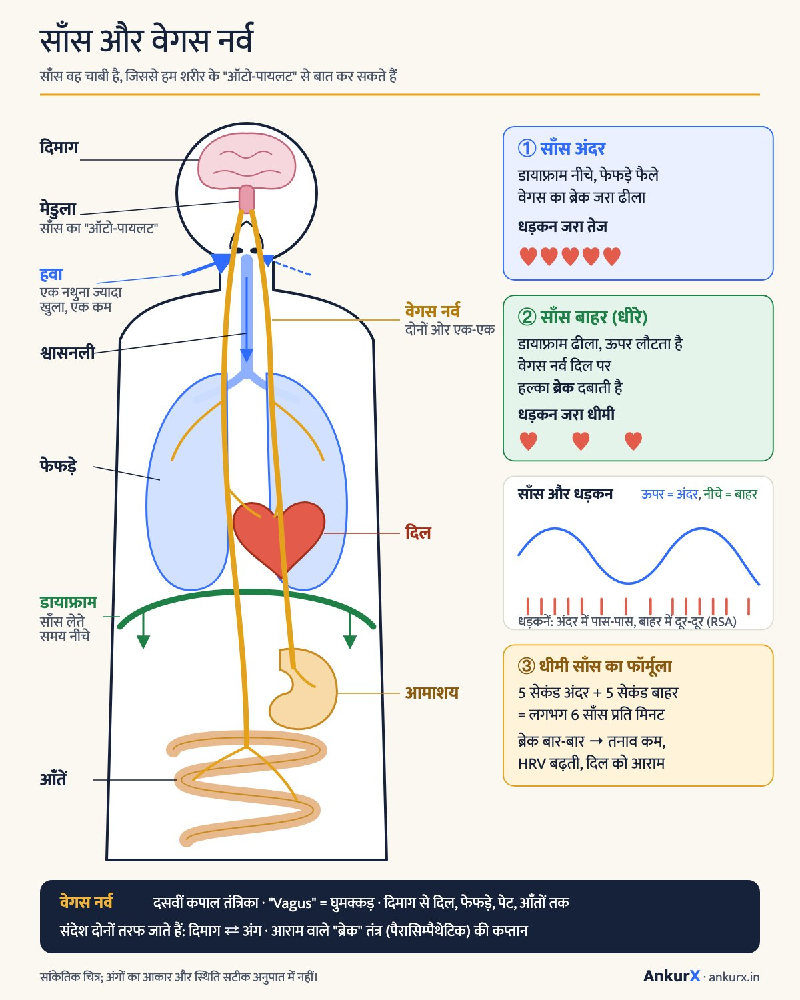

आपकी नाक चुपके से शिफ्ट बदलती है! साँसों का विज्ञान और अध्यात्म
भगवान ने, या कहिए प्रकृति ने, हमें कई चीजें जोड़े में दी हैं। दो आँखें, दो कान, दो हाथ, दो पैर। कभी सोचा है, ये "डबल पैक" किसलिए?
आँखों का मामला सीधा है। दोनों आँखें एक ही चीज को थोड़े अलग कोण से देखती हैं। दिमाग दोनों तस्वीरें मिलाकर बता देता है कि चीज कितनी दूर है। इसी को त्रिविमीय दृष्टि (Stereoscopic Vision) कहते हैं। एक आँख बंद करके सुई में धागा डालकर देखिए, फर्क खुद समझ आ जाएगा।
कानों का भी यही हिसाब है। आवाज एक कान में जरा पहले और जरा तेज पहुँचती है, दूसरे में जरा बाद में। बस इतने से फर्क से दिमाग समझ जाता है कि आवाज किधर से आई। तभी तो पीछे से कोई नाम पुकारे, तो गर्दन सही दिशा में ही घूमती है।
अब आते हैं नाक पर। नाक तो एक ही है, पर छेद दो क्यों? एक बड़े छेद से काम नहीं चल जाता?
जवाब सुनेंगे तो हैरान रह जाएँगे। और हाँ, इसका जवाब आपकी अपनी नाक के नीचे छिपा है, सचमुच।
एक छोटा-सा जासूसी प्रयोग
अभी, इसी वक्त, एक काम कीजिए। अपनी तर्जनी उँगली को दोनों नथुनों के ठीक नीचे आड़ा रखिए, जैसे मूँछ लगा रहे हों। अब आराम से साँस बाहर छोड़िए।
ध्यान दीजिए। क्या दोनों तरफ से बराबर हवा आ रही है?
बहुत संभव है कि नहीं। एक तरफ से हवा का झोंका ज्यादा लगेगा, दूसरी तरफ से कम। अब दो-तीन घंटे बाद यही प्रयोग फिर कीजिए। हो सकता है, पासा पलट चुका हो।
(एक बात साफ कर दें: उँगली हवा का बहाव महसूस करती है, उसका तापमान नहीं नापती। यह थर्मामीटर नहीं, बस मोटा-मोटा अंदाजा है।)
तो चल क्या रहा है?
नाक की शिफ्ट ड्यूटी
समझिए कि आपकी नाक में दो चौकीदार हैं। एक ड्यूटी पर होता है तो दूसरा थोड़ा सुस्ता लेता है। कुछ घंटे बाद ड्यूटी बदल जाती है। पर ध्यान रहे, आराम वाला चौकीदार सोता नहीं, बस धीमे काम करता है। यानी एक नथुना पूरा बंद नहीं होता, बस थोड़ा संकरा हो जाता है।
विज्ञान इसे Nasal Cycle यानी नासिका चक्र कहता है। सन् 1895 में जर्मन डॉक्टर रिचर्ड कायसर (Richard Kayser) ने इसे पहली बार नाप-जोखकर दुनिया के सामने रखा।
होता यह है कि नाक के अंदर टर्बिनेट्स (Turbinates) नाम की उभरी हुई संरचनाएँ होती हैं, जिनमें खून की बारीक नलियाँ भरी रहती हैं। जिस तरफ इनमें खून ज्यादा भर जाता है, उधर के टर्बिनेट्स फूल जाते हैं और वह नथुना थोड़ा संकरा हो जाता है। हवा का ज्यादा ट्रैफिक दूसरी तरफ से निकलने लगता है।
यह ड्यूटी कितनी देर की होती है? एक अध्ययन में पाया गया कि जागते समय औसतन लगभग दो घंटे में और सोते समय लगभग साढ़े चार घंटे में शिफ्ट बदलती है। पर यह कोई सरकारी दफ्तर नहीं कि घड़ी देखकर काम हो। करवट, कसरत, हार्मोन, मौसम, सर्दी-जुकाम, सब इस पर असर डालते हैं। कुछ लोगों में यह चक्र साफ दिखता भी नहीं।
मजेदार बात यह है कि यह सारा खेल अपने आप चलता है और हमें भनक तक नहीं लगती। इसे चलाता है हमारा स्वायत्त तंत्रिका तंत्र (Autonomic Nervous System), यानी शरीर का वह "ऑटो-पायलट" जो दिल की धड़कन और पाचन जैसे काम बिना पूछे करता रहता है।
पर प्रकृति को यह झंझट क्यों चाहिए था?
सच कहें तो वैज्ञानिक भी अभी पक्का नहीं जानते। लेकिन कुछ अच्छे अंदाजे हैं—
- आराम वाले नथुने की अंदरूनी झिल्ली को नमी वापस पाने का मौका मिलता है।
- धूल और कचरा साफ करने वाली व्यवस्था को दम लेने का समय मिलता है।
- अंदर की नाजुक कोशिकाएँ सूखने से बचती हैं।
- गंध पहचानने में मदद मिलती है। कुछ गंध तेज हवा में अच्छी पकड़ी जाती हैं, कुछ धीमी हवा में। दो नथुने, दो रफ्तार, दोनों तरह की गंध पकड़ में।
यानी नाक सिर्फ हवा का रास्ता नहीं है। यह एक साथ एयर प्यूरीफायर, ह्यूमिडिफायर और हीटर, तीनों है। और बिजली का बिल भी जीरो!
साँस: अपने आप भी, अपनी मर्जी से भी
शरीर के ज्यादातर काम दो तरह के होते हैं। कुछ पूरी तरह अपने आप होते हैं, जैसे दिल धड़कना। आप चाहकर भी दिल से नहीं कह सकते, "भाई, दो मिनट रुक जा।" कुछ पूरी तरह हमारी मर्जी से होते हैं, जैसे हाथ उठाना।
साँस अनोखी है। यह दोनों टीमों में खेलती है।
आप सो रहे हों या मोबाइल में खोए हों, दिमाग के निचले हिस्से में बैठे मेडुला ऑब्लांगेटा और पॉन्स (Medulla oblongata and Pons) चुपचाप साँस चलाते रहते हैं। लेकिन जब चाहें, आप साँस रोक भी सकते हैं, धीमी भी कर सकते हैं।
साँस लेते समय डायाफ्राम (मध्यपट), यानी फेफड़ों के नीचे की गुंबदनुमा मांसपेशी, सिकुड़कर नीचे जाती है। फेफड़े फैलते हैं और हवा अंदर। साँस छोड़ने में तो कोई मेहनत ही नहीं लगती। डायाफ्राम ढीला होकर ऊपर लौटता है, फेफड़े रबर की तरह सिकुड़ते हैं और हवा अपने आप बाहर।
अब असली सवाल। जो चीज अपने आप भी चलती है और हमारे बस में भी है, क्या वह हमें शरीर के उन हिस्सों तक पहुँचा सकती है जो हमारे बस में नहीं हैं?
यहीं से कहानी में एंट्री होती है एक लंबी, घुमक्कड़ नस की।
वेगस नर्व: शरीर की घुमक्कड़ नस
वेगस नर्व (Vagus Nerve) दिमाग से निकलने वाली बारह जोड़ी कपाल तंत्रिकाओं (Cranial Nerves) में से दसवीं जोड़ी है। लैटिन में Vagus का मतलब है "आवारा" या "भटकने वाला"। नाम बिलकुल सही रखा गया है, क्योंकि यह जनाब गले से होते हुए दिल, फेफड़े, पेट और आँतों तक घूम आते हैं।
और यह सिर्फ हुक्म चलाने वाली नस नहीं है। यह दोनों तरफ की डाक ले जाती है। इसके ज्यादातर तार तो उलटे अंगों का हाल-चाल दिमाग तक पहुँचाते हैं। पेट में "तितलियाँ उड़ना" वाली बात सुनी है? उसमें इसका भी हाथ है।


हमारे ऑटो-पायलट के दो मोड हैं—
| सिम्पैथेटिक तंत्र (एक्सीलेरेटर) | पैरासिम्पैथेटिक तंत्र (ब्रेक) |
|---|---|
| खतरे या चुनौती के लिए तैयार करता है | शरीर को आराम में लाता है |
| दिल की धड़कन बढ़ाता है | दिल की धड़कन घटाता है |
| तनाव में ज्यादा सक्रिय | आराम में ज्यादा सक्रिय |
| Fight or Flight (लड़ो या भागो) | Rest and Digest (आराम करो, पचाओ) |
वेगस नर्व इस "ब्रेक" वाली टीम की कप्तान है, उसका सबसे बड़ा हिस्सा।
अब एक और प्रयोग। अपनी नब्ज पर उँगली रखिए और धीरे-धीरे लंबी साँस लीजिए, फिर धीरे-धीरे छोड़िए। ध्यान से महसूस करेंगे तो पाएँगे कि साँस लेते समय धड़कन जरा तेज होती है और छोड़ते समय जरा धीमी।
घबराइए मत, यह कोई बीमारी नहीं। उलटे, यह स्वस्थ दिल की निशानी है। विज्ञान इसे Respiratory Sinus Arrhythmia (RSA) कहता है। साँस छोड़ते समय वेगस नर्व दिल पर हल्का-सा ब्रेक दबाती है।
तो जब हम धीमी और लंबी साँसें लेते हैं, तो दरअसल बार-बार यह ब्रेक दबा रहे होते हैं। इससे दिल पर वेगस नर्व का असर बढ़ता है, और तनाव व ब्लड प्रेशर कम करने में मदद मिल सकती है।
यानी साँस वह चाबी है, जिससे हम अपने ऑटो-पायलट से थोड़ी बातचीत कर सकते हैं।
(एक छोटी-सी सावधानी: नाक की शिफ्ट ड्यूटी वेगस नर्व नहीं चलाती। वह काम मुख्य रूप से नाक की खून की नलियों से जुड़ी सिम्पैथेटिक नसें करती हैं।)
इड़ा, पिंगला और सुषुम्ना: हमारे ऋषियों की नजर
अब जरा पीछे चलते हैं। जर्मन डॉक्टर कायसर से सदियों पहले भारत के योगी नथुनों की इस अदला-बदली पर ध्यान दे चुके थे। स्वरोदय, यानी स्वर-विज्ञान, में तो बाकायदा देखा जाता था कि इस वक्त कौन-सा "स्वर" चल रहा है, दायाँ या बायाँ।
योग में तीन प्रमुख सूक्ष्म नाड़ियों की बात होती है—
इड़ा नाड़ी — बाएँ नथुने से जुड़ी मानी जाती है। प्रतीक है चंद्रमा। स्वभाव ठंडा, शांत, स्थिर।
पिंगला नाड़ी — दाएँ नथुने से जुड़ी। प्रतीक है सूर्य। स्वभाव गरम, ऊर्जावान, काम में जुटा हुआ।
सुषुम्ना नाड़ी — रीढ़ के बीचोंबीच से जाती मानी जाती है। जब दोनों नथुनों से लगभग बराबर साँस चलती है, तब इसे सक्रिय माना जाता है। इसे ध्यान और ऊँची चेतना की अवस्था से जोड़ा गया है।
चंद्रमा यानी ब्रेक, सूर्य यानी एक्सीलेरेटर। ऊपर वाली तालिका से कितना मेल खाता है, है न?
पर यहीं रुककर ईमानदारी बरतनी होगी। वैज्ञानिकों ने केवल बाएँ या केवल दाएँ नथुने से साँस लेने (Unilateral Nostril Breathing) पर कई अध्ययन किए हैं, लेकिन नतीजे आपस में मेल नहीं खाते। अभी तक यह साबित नहीं हुआ कि बायाँ नथुना हमेशा ब्रेक दबाता है और दायाँ हमेशा एक्सीलेरेटर। इड़ा, पिंगला और सुषुम्ना को शरीर की असली नसों के रूप में भी नहीं खोजा जा सका है।
तो समानता दिलचस्प है, बहुत दिलचस्प। पर दोनों को एक ही चीज मान लेना जल्दबाजी होगी।
प्राणायाम: साँस के साथ सधी हुई बातचीत
प्राणायाम में हम साँस की रफ्तार, गहराई, लंबाई और लय को अपनी मर्जी से चलाते हैं। योग में इसके तीन हिस्से बताए गए हैं—
| योग का शब्द | मतलब |
|---|---|
| पूरक | साँस अंदर लेना |
| रेचक | साँस बाहर छोड़ना |
| कुंभक | साँस रोकना |
अनुलोम-विलोम में बाएँ नथुने से साँस लेते हैं, दाएँ से छोड़ते हैं; फिर दाएँ से लेते हैं और बाएँ से छोड़ते हैं। दूसरा नथुना अँगूठे या अनामिका उँगली से हल्के से दबाकर बंद रखा जाता है। यानी जो काम नाक घंटों में अपने आप करती है, वह हम कुछ सेकंड में खुद करके देखते हैं।
आम तौर पर एक स्वस्थ वयस्क आराम में एक मिनट में 12 से 20 बार साँस लेता है। धीमे प्राणायाम में यह गिनती घटकर लगभग 5-6 रह जाती है, यानी करीब पाँच सेकंड साँस लेना और पाँच सेकंड छोड़ना।
और इस धीमी साँस के फायदे? वैज्ञानिक अध्ययनों में पाया गया है—
- तनाव में कमी।
- ब्लड प्रेशर काबू में रखने में मदद।
- दिल की धड़कनों के बीच के अंतर (Heart Rate Variability) में बढ़ोतरी, जो स्वस्थ दिल की निशानी मानी जाती है।
- ध्यान और एकाग्रता में सुधार।
और एक राज की बात: इनमें से कई फायदे सिर्फ अनुलोम-विलोम से नहीं, दोनों नथुनों से आराम से धीमी साँस लेने से भी मिलते हैं। यानी असली जादू रफ्तार में है, धीमेपन में।
जरूरी सावधानी: इन फायदों के लिए साँस को जबरदस्ती रोकना या तेजी से धौंकनी चलाना जरूरी नहीं है। कपालभाति, भस्त्रिका जैसे तेज प्राणायाम और लंबा कुंभक हर किसी के लिए नहीं हैं। हाई ब्लड प्रेशर, दिल की बीमारी, मिर्गी या गर्भावस्था में इन्हें किसी योग्य प्रशिक्षक और डॉक्टर की सलाह से ही कीजिए। प्राणायाम इलाज का साथी है, इलाज का विकल्प नहीं। दवा छोड़कर सिर्फ साँसों के भरोसे मत बैठिए।
क्या जानवरों की नाक भी शिफ्ट बदलती है?
अगर नासिका चक्र सिर्फ योग और अध्यात्म की चीज होता, तो शायद यह सिर्फ इंसानों में मिलता। पर प्रकृति ने यह ड्यूटी-चार्ट और जानवरों को भी थमा रखा है।
कुत्तों, सूअरों, खरगोशों और चूहों में भी नासिका चक्र के वैज्ञानिक सबूत मिले हैं। कुत्ते की सूँघने की जबरदस्त ताकत के पीछे उसकी नाक की खास बनावट और हवा के बहाव का खास इंतजाम है। सूअरों पर तो प्रयोगशाला में यह भी देखा गया है कि इस चक्र को नसें कैसे चलाती हैं।
और डॉल्फिन? उसकी कहानी अलग है। वह सिर के ऊपर बने एक छेद (Blowhole) से साँस लेती है। यह छेद असल में उसकी नाक ही है, जो विकास के लाखों सालों में खिसकते-खिसकते सिर की छत पर पहुँच गई। सोचिए, अगर हमारी नाक भी वहाँ होती तो चश्मा कहाँ टिकता!
ज्यादातर मछलियाँ गलफड़ों से साँस लेती हैं। उनके नथुने साँस के लिए नहीं, सिर्फ सूँघने के लिए हैं।
मतलब साफ है: हर जीव ने अपनी जरूरत के हिसाब से साँस और सूँघने का अलग इंतजाम बनाया है। हर जानवर में इंसानों जैसा नासिका चक्र नहीं होता।
साँस और मन: दोतरफा रास्ता
गुस्सा आए तो साँस तेज। डर लगे तो साँस अटक-अटक कर। गहरी नींद में साँस एकदम लयबद्ध। यानी मन जैसा होता है, साँस वैसी हो जाती है।
पर असली मजा यह है कि यह रास्ता दोतरफा है। साँस बदलिए, मन भी कुछ हद तक बदल जाता है। गुस्से में "दस तक गिनो और लंबी साँस लो" वाली दादी-नानी की सलाह यूँ ही नहीं थी!
आधुनिक शोध बताते हैं कि दिमाग के कई हिस्सों की हलचल साँस की लय के साथ ताल मिलाती है। इनमें याददाश्त वाला हिस्सा (हिप्पोकैम्पस) और भावनाओं वाला हिस्सा (एमिग्डाला) भी शामिल हैं। और गौर कीजिए, यह तालमेल मुँह से नहीं, नाक से साँस लेने पर ज्यादा साफ दिखा।
यानी नाक सिर्फ हवा नहीं, दिमाग के लिए ताल भी देती है।
जहाँ विज्ञान और अध्यात्म हाथ मिलाते हैं
भारतीय अध्यात्म ने साँस को तन और मन के बीच का पुल माना। आज का विज्ञान उसी पुल की एक-एक ईंट गिन रहा है।
अध्यात्म कहता है, साँस के सहारे भीतर उतरो। विज्ञान कहता है, साँस के सहारे दिमाग, दिल और नसों का रिश्ता समझो। रास्ते अलग हैं, पर दोनों की नजर एक ही चीज पर टिकी है: साँस।
प्राणायाम के हर पुराने दावे पर विज्ञान ने मुहर नहीं लगाई है। पर इतना तय है कि सधी हुई साँस का शरीर और मन पर असर एक वैज्ञानिक सच्चाई है।
शायद प्रकृति ने साँस के रूप में हमें एक ऐसा रिमोट कंट्रोल दिया है, जिससे हम अपने शरीर के "ऑटोमैटिक" कामों पर भी थोड़ा असर डाल सकते हैं।
तो अगली बार जब नाक का एक तरफ बंद-सा लगे, तो परेशान मत होइए। हो सकता है, बस शिफ्ट बदल रही हो।
और हाँ, यह लेख पढ़ते-पढ़ते आपने कितनी बार उँगली नाक के नीचे रखी, ईमानदारी से बताइए!
प्रमुख वैज्ञानिक संदर्भ
- Kayser R. (1895). Die exakte Messung der Luftdurchgängigkeit der Nase. Archiv für Laryngologie und Rhinologie, 3: 101–120.
- Kahana-Zweig R. et al. (2016). Measuring and Characterizing the Human Nasal Cycle. PLOS ONE, 11(10): e0162918.
- Pendolino A.L. et al. (2018). The Nasal Cycle: A Comprehensive Review. Rhinology Online, 1: 67–76.
- Russo M.A. et al. (2017). The Physiological Effects of Slow Breathing in the Healthy Human. Breathe, 13(4): 298–309.
- Zaccaro A. et al. (2018). How Breath-Control Can Change Your Life: A Systematic Review on Psycho-Physiological Correlates of Slow Breathing. Frontiers in Human Neuroscience, 12: 353.
- Zelano C. et al. (2016). Nasal Respiration Entrains Human Limbic Oscillations and Modulates Cognitive Function. Journal of Neuroscience, 36(49): 12448–12467.
चित्र संबंधी टिप्पणी: चित्र में गरम हवा से नथुने की सक्रियता पहचानने का प्रयोग सांकेतिक है। असल में उँगली हवा के बहाव का फर्क महसूस करती है, तापमान का नहीं।
सावधानी: यह लेख सामान्य जानकारी के लिए है। किसी बीमारी में प्राणायाम शुरू करने से पहले अपने डॉक्टर से सलाह लें।
लेख अच्छा लगा? पसंद करें और दोस्तों से शेयर करें: